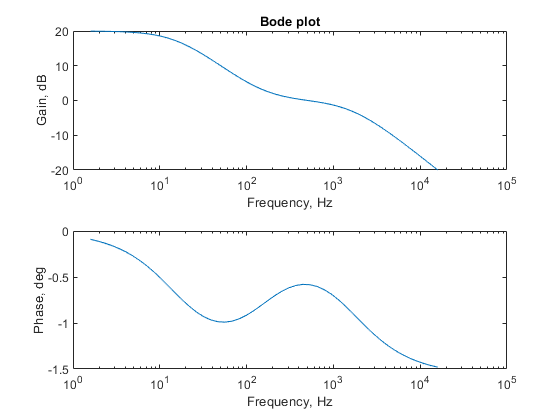

plot the Bode plot of a network function
Contents
Create a list of logarithmically spaced frequencies.
wmin=10; % starting frequency, rad/s wmax=100000; % ending frequency, rad/s w = logspace(log10(wmin),log10(wmax));
Enter values of the parameters that describe the network function.
K= 10; % constant z= 1000; % zero p1=100; p2=10000; % poles
Calculate the value of the network function at each frequency. Calculate the magnitude and angle of the network function.
for k=1:length(w) H(k) = K*(1+j*w(k)/z) / ( (1+j*w(k)/p1) * (1+j*w(k)/p2) ); mag(k) = abs(H(k)); phase(k) = angle(H(k)); end
Plot the Bode plot.
subplot(2,1,1), semilogx(w/(2*pi), 20*log10(mag)) xlabel('Frequency, Hz'), ylabel('Gain, dB') title('Bode plot') subplot(2,1,2), semilogx(w/(2*pi), phase) xlabel('Frequency, Hz'), ylabel('Phase, deg')
